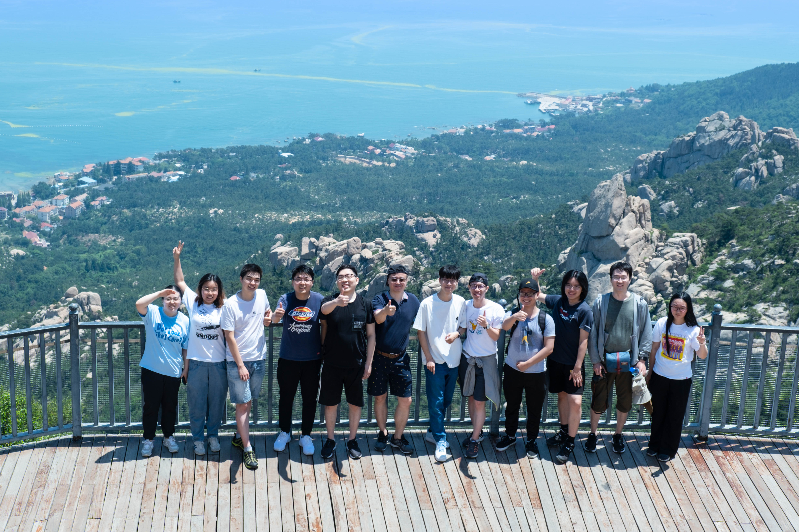

欢迎来到清华大学机器智能实验室!
我们的研究聚焦于人工智能领域中一个基础且根本的问题：如何学习决策和行动。决策和行动是智能体能够影响或控制环境，并达成其目标的唯一方式。
一个理想的、通用的人工智能决策框架应当能够在没有或只有最少量的人类知识或数据的情况下完成一系列复杂的决策任务。 为了实现这一愿景，我们组的研究方向涵盖了通用人工智能领域里许多关键问题，包括但不限于：表征学习、世界模型学习与推理、智能决策学习与规划、以及多智能体学习等。 具体而言，我们希望可以构建一个完全自主的智能体——它能够从观察和感知中提取并利用相关信息，学习到一个可以适用于多种任务的世界模型， 通过预测和推理规划出实现任务的策略，从而与其他智能体或者人类交流并协作完成各种复杂任务，甚至与其他智能体共享知识。
目前，我们在深度学习、强化学习和多智能体系统等领域，融合了认知科学、博弈论、信息论、社会科学、以及系统科学等其他相关领域中的知识，构建了新型、高效的模型与算法，并在游戏、机器人等应用场景上得到了验证。
最新动态